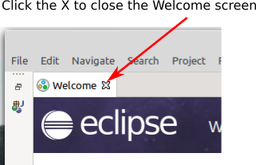
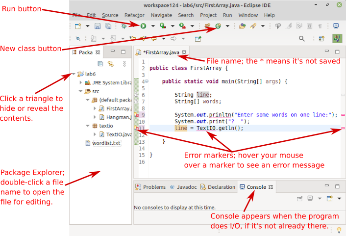
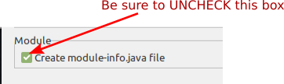
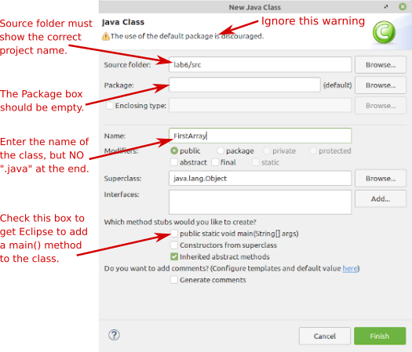
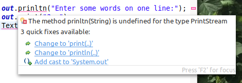
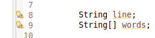
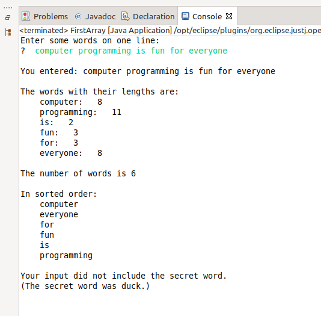

CS 124, Fall 2021
Lab 6: Arrays (and Eclipse)
This lab introduces an "Integrated Programming Environment" (IDE) called Eclipse. Eclipse provides a complete GUI environment for writing, compiling, and running Java programs. Eclipse is a free program, but it is one of the most common environments used by professional Java programmers. It is a complex program that can do many things, but you don't have to understand everything that it can do in order to use it effectively. Interestingly, Eclipse is itself written in Java. For this lab, you are required to use Eclipse. After this lab, whether you continue to use it or go back to using a plain text editor for Java programming is up to you.
Learning to use Eclipse is a big part of the lab. The two programming exercises for the lab ask you to use arrays for the first time. The programs should not be as much work as the usual lab exercises.
You will not need to make a folder for use in this lab. Instead, you will create an Eclipse project. The instructions are given below.
The work from this lab is due, as usual, at next week's lab. For this lab, I would like you to turn in a copy of your entire Eclipse project. See the instructions for turning in your work at the end of this web page.
Starting with Eclipse
Eclipse is a widely used professional environment for program development. The lab should tell you everything that you need to know to use it (except for using JavaFX, which we will get to in the next lab), but note that Eclipse is also discussed in Section 2.6 of the textbook.
Eclipse is installed on our Linux computers. You can access it in the "Programming" section of the Application menu. You might want to add an "Eclipse" button to the panel at the bottom of the screen to make it easier to get to. To do that, simply right-click the "Eclipse" item in the Application menu, and select "Add to Panel".
Start up Eclipse! It will ask you to "Select a directory as workspace". The workspace is a directory where the work that you do in Eclipse will be stored. By default, it will use a folder named "workspace" in your home directory, but you can change the name. For example, you might want to name it "workspace124", or put it inside your cs124 directory. It's possible to have more than one workspace, and choose the one that you want to use when you run Eclipse. (There is a checkbox in the workspace dialog that you can check if you don't want to be asked to select a workspace each time you run Eclipse.)
After you have selected your workspace, the Eclipse window opens. The first time you run Eclipse, the window will be filled with a "Welcome" screen. The icons on this screen link to a large amount of information about Eclipse. You can browse through this information some time, if you like, but for now, just close the Welcome screen by clicking the "×" next to the word "Welcome":

You will see the window divided into sections, which Eclipse calls "Views". You might want to close the "Outline" view on the right side of the window. If you ever mess up the layout of the window and want to restore it, use the "Window" menu / "Perspective" submenu / "Reset Perspective" command. (A "perspective" is what Eclipse calls the who set of views in a window.)
Here is what the Eclipse window might look like after a little work has been done. Your goal for the first part of the lab is simply to make your window look pretty much exactly like this. Instructions are given in the rest of this section.

Start a Java Project. You should begin by creating a new Java project. Use the command "File" menu / "New" submenu / "Java Project". You will see a New Java Project dialog. Fill in the "Project Name" at the top of the dialog. The name for project for this lab should be Lab6. You should also be careful to uncheck the box labeled "Create module-info.java file" at the bottom of the dialog:

Modules are an advanced feature in Java that we will not use. Click the "Finish" button. You will see the Lab6 project in the "Package Explorer" view on the left side of the Eclipse window. Click the little triangle next to the name to show the contents of the project.
Create a new class. Remember that a Java program is a "class" (but not all classes are programs). To start work on a new program, you need to create a new class. Create a class named FirstArray by right-clicking the project and using the command "New" submenu / "Java class" from the popup menu. (Another way to create a class is by clicking the New Class button, shown in the above illustration.) You will see the New Java Class dialog:

For this lab, the name of the class that you create should be FirstArray. Note that you are naming the class (FirstArray), not the .java file (FirstArray.java). Note the other inputs in the dialog that are indicated in the above illustration. The source folder will already be set correctly if you got to the New Class command by right-clicking the project name in the Package Explorer.
When you click the "Finish" button, the file will be created in the src folder. It should be listed inside "(default package)". The file will automatically be opened for editing in the large edit area in the center of the window; you will do that later. You can have more than one file opened at once; they are shown as tabs in the edit area of the window.
Add an existing class to the project. You will be doing some further work on your Hangman program, from Lab 5. You need to add your file Hangman.java to the Lab6 project in Eclipse. To do that, open a file browser window and navigate to the Lab5 folder that contains Hangman.java. Right-click the Hangman.java file and choose "Copy" from the popup menu. Then go to the Eclipse window, right-click the src folder, and select "Paste" from the popup menu. The file should appear in the src folder. A file must be in the src folder for it be considered to be a part of the program. Files outside that folder cannot be compiled or run, although they can still be edited. When you want to open the file to edit it, you will need to double-click the file name in the src folder in the Package Explorer.
Add a folder to the project.When you paste Hangman.java into the project, you will see little red error markers appear. This is because Hangman.java uses TextIO, which is not a standard part of Java. A copy of the textio folder, which contains TextIO.java has to be added to the project. You can do that in the same way you added Hangman.java to the project: Just copy-and-paste the entire textio folder into the src folder in the project. When you have done that, the error markers will go away.
Add a plain file to the project. The improved Hangman program will use random words selected from a list of words. The list is in the file wordlist.txt. You can find the file in /classes/cs124_Eck, or download it using the above link. For the program to find it, wordlist.txt must be in the project, but not inside the src folder. To add it to the project, find the file icon in a file browser window, right-click and Copy it, then right-click on the project name (Lab6) in the Eclipse window. The file should appear in the project, outside the src folder. (If you aren't sure, hide the contents of src by clicking the small triangle, and you should still see wordlist.txt).
It can be easy to get files in the wrong place! But if that happens, you can simply move the file by dragging the file name in the Eclipse window to the folder where the file belongs.
You should now have all the files in the Lab6 project that you need for this lab! The next step is to learn about editing a program in the Eclipse window.
Editing and Running Java files in Eclipse
FirstArray.java should be open in the Eclipse editor. Try typing some Java code into the main() routine in that file. You could copy the code from the illustration of the Eclipse window shown earlier in the lab. Eclipse will indent your program as you type, and when you type a "{" or "(", it will automatically insert the matching "}" or ")". (Hint: After typing "{" just immediately press return!!).
But Eclipse will also mark syntax errors in your code as you type. You can see an error message by hovering your mouse above the error marker. Furthermore, if you hover your mouse above the the underlined part of the code where the error occurred, you will get a list of possible fixes, and you can apply a fix by clicking on it. Here, for example are the fixes for the misspelling System.out.prinltn:

You can tell that a fix is available if there is an "error light bulb" in the left margin. Clicking the light bulb is another way to show the list of errors. Sometimes, you will see a warning light bulb in the margin:

Here, the warning is that the variables have been declared but are never used. Note that a warning is not an error. A warning indicates a potential problem, but not an error. Warnings will not prevent the source code from being compiled successfully.
Warnings and errors will often go away as you continue to type your program! You definitely do not need to fix the error as soon as it pops up. Often, that is not even possible! Furthermore, Eclipse's error system is only effective if you routinely get most of your program correct in the first place — don't expect Eclipse to make solid Java programming skills unnecessary!
In fact, many of the fixes that Eclipse will offer will do things to your code that you won't understand and that might well make things worse. Not every fix is a good idea! Don't let Eclipse fix your code unless you understand what it wants to do and why!
Note that Eclipse will even spell-check your comments. It will mark a misspelled word in a comment with a red underline. If you hover the mouse over a misspelled word, you will get a list of possible corrections. Click an item in this list to apply the correction to the word.
You might have already noticed that when you type a period, a list of things that can follow the period will pop up, and you can select an item from the list instead of typing it in. This is called Content Assist. You can invoke Content Assist at any time while you are typing by pressing Control-Space. If you do this in the middle of the name of a variable, class, or subroutine, pressing Control-Space will either complete the name or offer a list of possible completions. It can be used in other ways as well. For example, if you press Control-Space after typing the "(" at the beginning of a subroutine's parameter list, you will get information about the parameters of the method. By the way, when Content Assist pops up a list, you can get rid of the list by pressing the Escape key.
Content Assist is a good thing, but I find the way it pops up automatically while I am typing to be rather annoying. You can turn off this feature in the Eclipse Preferences. Select the "Preferences" command from the "Window" menu. In the Preferences dialog box, click the little triangle next to "Java" to open the list of Java preferences (if necessary), then click the triangle next to "Editor", and finally click on "Content Assist." In the Content Assist preferences, uncheck the box labeled "Enable Auto Activation" and click "OK". You can still use Control-Space to call up Content Assist.
Running a program: In Eclipse, there is no separate command for compiling a program. That is done automatically. To run a program, you can right-click on the name of a Java file or in an editor window that contains the Java file. In the popup menu, go to the "Run As" submenu and select the "Java Application" command.
But an easier way to run a program is to click the Run button at the top of the window. (See the illustration of the Eclipse window earlier in this section.) Clicking the button will run the program in the editor (if there is one), or the program that is selected in the Package Explorer (if there is one), or the program that was most recently run (if there is one). Sometimes, it can be a bit confusing about what it is doing. For example, if the Java file in the editor is not a program because it has no main() routine, then Eclipse will ignore it and try to run something else instead.
When you run a program that does command-line input or output, the program runs in the "Console" view in the bottom section of the window. That view will appear if it is not already visible. But you have to click the Console before you can type anything into it. If you forget to click the Console before typing, your typing will go to some other part of the Eclipse window. This is really rather annoying.
When you have some working code in FirstArray.java, try running it!
Stopping a program. If you need to stop a program, maybe because it is running in an infinite loop, look for a read square at the top of the Console view. It will be there is a program is running in the Console. Clicking the red square will stop the program (like hitting Control-C in the Terminal).
Eclipse has a lot of other useful features. We will encounter more of them as time goes on, and you can undoubtedly discover a few new ones on your own. But here are a few of the most useful for you to peruse when you have the time:
- Eclipse can fix the indentation of your source code. Just highlight a segment of code and press Control-I. To indent the whole program, use Control-A to select all the text in the program, then use Control-I. Note that fixing the indentation is a good way to find mis-matched braces and incorrectly nested blocks of code in your program! Control-I will show you how the program is really structured. With this feature available, there is really no excuse at all for badly indented programs. You need to apply this to all the source code files that you submit for grading in this course!!!
- Highlight a segment of code and hit Control-/ to "comment out" that code by adding "//" to the beginning of each line. If the code was already commented out, it will be commented back in, by removing the //'s.
- If you double click just after a "{" or "}", the entire block will be highlighted, making it easier to figure out just where the block begins or ends.
- Highlight the name of a class, method or variable and hit F3. You will be taken to the declaration of the highlighted name, even if it is in another file.
- When an un-caught exception occurs when you run your program, the stack trace of the exception appears in the Console view. The stack trace contains links to lines in the program, and clicking on the link will take you to that line in an editor view. You should always look for the first line in the stack trace that refers to one of the classes that you wrote, rather than to one of Java's built-in classes.
- Eclipse can do smart renaming. To do a smart rename, just highlight the name, and select the "Rename" command from the "Refactor" menu. When you rename a variable, method, or class in this way, all references to that item will be changed to use the new name. (Refactoring is a general term that refers to rearranging or modifying code to improve it or make it more general.)
- Double-clicking a tab at the top of any section of the Eclipse window will expand that section to fill the entire window. Double-clicking the tab again will restore the window to its usual state. This can be especially useful for a Console.
- As you edit a file, Eclipse keeps many old versions of each file in a "history", and you can revert to earlier versions from this history if you need to. To see the history for a file, right-click the file and choose "Replace With / Local History".
Programming Exercise: FirstArray.java
You should complete the program FirstArray.java to read one line of text from the user and to process it as shown in this picture, which shows the program run in the Console with user input shown in green:

There are two new Java subroutines that you will need: the split() function in strings and a sorting subroutine that is built into Java in a class named Arrays in package java.util. The Arrays class contains a number of utility subroutines for working with arrays.
For a String variable str, the function str.split(delimiter) splits the
line into an array of substrings. That array is the return value of the function. The delimiter
parameter is another string that marks the divisions between the substrings in str. For example, if
the value of str is "one,two,three", then str.split(",") is an array of length 3
containing the strings "one", "two", and "three". (The delimiter is actually something called a "regular expression",
not just a plain string, but I won't go into that here. Most plain strings will work.)
In FirstArray.java, line is a variable of type String, which should contain the user's input. (When you use TextIO to read the user's input, it will be marked as an error until you add import textio.TextIO; to the top of the file.) The input should consist of words separated by single spaces. You can convert the user's input into an array with the statement:
words = line.split(" ");
where words is a variable of type String[]. In the rest of the program, you
will work with this array, using for loops to iterate through the values in the array.
You need to print out the words, one to a line, with the the length of each word. Then you need to sort the array, and print out the words again. Sorting is not a trivial algorithm, but Java already has a method that will do it for you. You just need to call
Arrays.sort(word);
Now, to get access to the Arrays class, you need to import it. That means adding the command import java.util.Arrays; to the top of the file. When I was writing the program, I was surprised that Eclipse did this for me automatically! (However, it does not do that for every possible class. It didn't do it for TextIO.)
The last thing you need to do is to test whether any of the words in the array is the "secret" word. The secret word can be anything you choose. The point is just to program an array search.
Programming Exercise: Improved Hangman
You should have already copied your Hangman.java into the Lab6 project in Eclipse. Double-click "Hangman.java" in the Project Explorer to open Hangman.java for editing. You will improve the game in two ways: Instead of using some specific word for the user to guess, it will select a random word from a long list of words. And it will allow the user to play multiple games.
The file wordlist.txt contains a list of words for you to use with Hangman. I selected words randomly from a much longer list of English words, and removed some that were proper names or too obscure. You should already have added wordlist.txt to the Lab6 project, outside the src folder. (When you run a program in Eclipse, the working directory is the project folder, not the src folder.)
It is possible to use TextIO to read from a file, using the same functions that you would use to read the user's input, such as TextIO.getln() and TextIO.getlnInt(). You just have to tell TextIO to use the file. It's very easy. The pattern looks like this, where filepath is a String that contains the name of a file in the working directory, or a path to a file in another directory:
TextIO.readFile( filepath ); // Tell TextIO to read from the file
.
. // Read from the file.
.
TextIO.readStandardInput(); // Go back to reading the user's input.
(See Subsection 2.4.4 for more information about using TextIO to work with files.)
You need to create an array to hold the list of words. The first line of wordlist.txt is an integer that tells how many words are in the list. You should read that number and use it as the length of the array that you create. Then you can use a for loop to fill the array with the words from the file.
Once you have the array, it's easy to select a random word from the array. We did something like that in class. If you followed the instructions from Lab 5, the program will still work with a randomly selected word.
To improve the program a bit more, after each game, you should ask the user if they want to play again, and they should be able to continue playing until they say no. (A nice idea is to use TextIO.getlnBoolean() to read the user's response.) To implement this, you have to put the game playing code inside another while loop. After adding a while before the game and a "}" at the end, you should immediately do Control-A, Control-I to fix the indentation of the program!! (By the way, the code that reads the array from the file should be before the big while loop — you don't want to re-read the file for every game. Read it just once at the beginning.)
Turning in Your Work
For this lab, I would like you to turn in your entire Lab6 project folder. Eclipse created a workspace folder, and the Lab6 project folder will be inside it. You can open the workspace folder in a file browser window and your homework folder in another file browser window, and then just copy-and-paste the Lab6 folder into your homework folder. Alternatively, in a terminal, you can cd into the workspace directory and use a command like
cp -r Lab6 /classes/cs124_Eck/homework/LastName
where "LastName" should be your own last name.
Your work from this lab, which includes the work from Lab 5, will be graded out of a maximum of 30 points.
Using Eclipse on Your Own Computer
You can use Eclipse on your own computer. Download the "Eclipse IDE for Java Developers" from this page:
https://www.eclipse.org/downloads/packages/
Do not be tempted by the "Installer" at the top of the page. Get the package named "Eclipse IDE for Java Developers" listed under the Installer. You almost certainly want to get the x86_64 version for Windows or Mac OS, using one of the links listed to the right of the package name.
For Mac OS, you get a .dmg file. Just open it an drag Eclipse to your Appications folder. For Windows, you get a compressed .zip file, which you can extract to any location that you like on your computer; the directory that you get contains the Eclipse program. Just like on Linux, when you start Eclipse, you will be asked to specify a location for your workspace. Everything else should work that same, except that on Mac, most keyboard commands use the Command key instead of the Control key.
If you work on your own computer, it is probably easiest to use the scp command to submit the homework. The command would have the form
scp -r Lab6 zz999@math.hws.edu:/classes/cs124_Eck/homework/LastName
where you need to replace zz9999 with your own user name and LastName with your own last name. You should give the command while working in your workspace directory in a cmd window on Windows or a Terminal window on Mac. An alternative way to transfer files is with sftp.
(It will take some additional setup to use Eclipse with JavaFX, but we will cross that bridge when we come to it.)